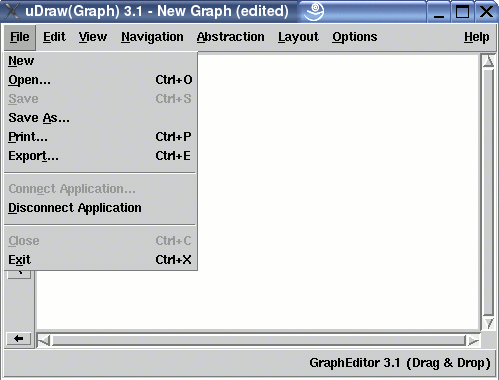

Manual
File Menu
The "File" menu contains functions for performing operations on files such as opening, saving, printing and exporting. It also has function for connecting an application to the API and for closing the program.
Note: Menu operations can also be invoked without the mouse by using keyboard commands.
File and Printer Management
-
New
To clear the graph area, i.e. removing the graph in the base window. In multi-view mode when there are different views (base windows) for one graph, this operation only affects the base window where this operation was invoked and not the other views of the graph. In this case the cleared view will be disconnected from the other views to act independently. -
Open...
To load a uDraw(Graph) graph or graph status from file. After selecting this menu entry, a file browser appears to specify the file name. In multi-view mode loading a graph in one view will display the new graph only in the base window where this operation was invoked. In this case this view will be disconnected from the other views to act independently. -
Save
To save the current graph status to a file for loading it in a later session. This operations stores the status directly without showing a file browser. The file name for the status is generated automatically, if possible. For example when the graph "my_graph.udg" is loaded, the file name for this operation will be "my_graph.status" in the same directory. The menu is disabled if no graph name is available, for example when a new one is created with the graph editor. Note: this operation overwrites a file with the same name without asking the user to confirm. -
Save As...
To save the current graph or graph status to a file. After selecting this menu entry, a file browser appears to specify the file name. Saving a status is used to be able to restore the current session later, especially to preserve the layout of a graph. -
Print...
To send the current graph in PostScript® format to a printer or to store it in a PostScript® file. After selecting this menu entry, the print dialog window appears to specify the parameters. -
Export...
To save the current graph in different image formats, e.g. GIF, TIFF or PNG. After selecting this menu entry, the export dialog window appears to specify the parameters.
Application Management
-
Connect Application...
To connect a uDraw(Graph) application to the API. After selecting this menu entry, a file browser appears to specify the file name of the application executable and its options. Afterwards you have to specify additional parameters in the connection options dialog which appears after the file browser. Read more about applications in the concept chapter. An external application program can use uDraw(Graph) as a graphical user interface for graphs. One application is the graph editor which is delivered with the distribution. -
Disconnect Application
To disconnect a uDraw(Graph) application which is currently connected to the API. Afterwards the API is free to connect another application. Disconnecting is only possible when the application supports this feature, i.e. it has to terminate after receiving the event answer disconnect. from the API.
Closing
-
Close
To close the base window where this operation is invoked, but without terminating the whole program. This menu is only available in multi-view mode when the graph is displayed in more than one view (i.e. base window). The last view to a graph cannot be closed. -
Exit
To exit a session by terminating the program. uDraw(Graph) itself will not ask the user to confirm before quitting, so be sure to save the graph status if you want to keep the layout for a later session. An application connected to the API may ask the user to confirm if there are unsaved changes. The graph editor delivered with uDraw(Graph) will do so, for example.
Copyright © 2005, Universität Bremen. All rights reserved.